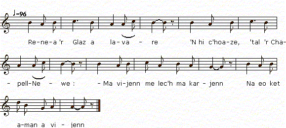

Renea Ar Glaz (Stumm kentañ)
Renée Le Glas (1ère version)
chant à rapprocher d'"Azénor la Pâle" du "Barzhaz Breizh"
Texte recueilli par François-Marie Luzel:
Publié dans "Gwerzioù Breizh-Izel", tome 1, en 1868

Mélodie
Chantée par Marie-Jeanne Le Bail à Port-Blanc
tirée de "Musiques Bretonnes",
recueil de Maurice Duhamel publié en 1913
Arrangement Christian Souchon (c) 2012
Source: le site de M.Quentel, "Son ha ton" (voir "Liens")
|
VERSION "GWERZIOU BREIZ IZEL" I Renea 'r Glaz a lavare 'N hi c'hoaze, 'tal 'r Chapell-Newe : - Ma vijenn me lec'h ma karjenn Na eo ket aman a vijenn ; Met 'n Kerversault, gant 'r map-henan, Ma muia karet er bed-man ; Ma muia karet goude Doue, Hag 'vezo keit 'vinn en buhe. - II Renea 'r Glaz a lavare, Ebars ar ger pa arrue : - Petra 'zo newez en ti-man, Ma medi ar beer diouc'h an tan? Ma medi ar beer diouc'h ann tan, 'R pot-houarn braz, ann daou vihan ? - - Terrupl, Renea, ho klewet, P'eo warc'hoaz kenta ho eured ! - - Mar medi warc'hoas ma eured, Piou lareur ann hini 'm euz bet ? - Terrupl, Renea, ho klewet, Ha braoa den oc'h euz-c'hui bet ! Ha braoa den oc'h eus-c'hui bet, Ervoanik Gelard da bried ! - Renea 'r Glaz a lavare D'hi mates vihan, ann de-se : - Dalet, mates, al lizer-man, It-c'hui da Gerversault gant-han; It-c'hui da Gerversault gant-han, Hag hen roët d'ar map-henan. - Ar vates vihan a lare, En Kerversault pa arrue : - Demad ha joa holl en ti-man, Pelec'h medi ar map-henan ? - - D' betra 'c'h euz ezom 'r map-henan, P'eo dimet hi dous Renean? - - Bet drouk gant ann nep a garo, Euz ar map-henan me gomzo ! - - 'Ma duze var he wele klan, Gant ar c'heun d'he dous Renean. - Ar vates vihan 'lavare, 'Tall ar map-henan p'arrue : - Dalet, map-henan, 'l lizer-ma, Digant ho toussik Renea; Digant ho toussik Renea, Hennes hi lizer diweza. - N'oa ket 'l lizer digoret mad, Ma oa ann dour 'n e daoulagad : - Mar d'e gwir lar al lizer-ma, Me n' 'm euz ket pell-meur da vewa ; Ne n' 'm euz ket pell-meur da vewa, Hi d'euz neubeutoc'h, a gredan ! .- III Renea 'r Glaz a lavare Euz prennestr hi c'hambr, en de-se : - Me well Ervoan Gelard 'tont aman, 'R gompagnunes vrao ' zo gant-han : Digant ma Jesuz 'reketan Ma toro he c'houg 'tont aman ! - Ervoanik Gelard a lare, 'N ti ar Glaz koz pa arrue : - Demad ha joa holl en ti-ma, Medi ma doussik Renea ? - - Medi 'r gabinet, 'n traon ann ti, Ervoanik, et-c'hui da ved-hi : Ervoanik, et-c'hui da ved-hi, Ha 'n han' Doue konzolet-hi. - - Demad d'ech-c'hui, Renea goant ; - - Ha d'ec'h, 'me-z-hi, intaon iaouank. - - Itron Varia ann Drindet ! Wit un intaon ma c'hommerret ? - - Wit 'n intaon n'ho kommerrann ket, Met n' vo ket pell-meur a vefet ! - Renea 'r Glaz a lavare En porz hi zad hag en de-se : - Me ro m' malloz a galon-vad Ha koulz d'am mamm evel d'am zad, Ha da gement 'vag hugale, Hag ho dime 'n despet d'ez-he ; Da gement a vag tud-iaouank, Pa n'ho lezont da cboas ho c'hoant ! - Renea 'r Glaz a lavare, 'Biou Kerversault pa dremene ; - Ervoanik Gelard, laret d'in, Ma lezel 'refet d' vont en ti, Ma lezel d' vont er maner-man D' gimiadi euz ar map-henan? - - Ewit brema na iefet ket, O tont d'ar ger, na larann ket. - - Bet drouk gant ann nep a garo, En Kerversault me diskenno ! - Pa diskenn Renea en ti, Oa rannet hi c'halon d'ez-hi; Oa ar c'horf paour war ar varwskaon, Doue d' bardono ann anaon ! Tapout he benn war hi barlenn, Merwel eno en he gichenn ! Kerc'had 'zo linsell d'ho lienna, Alumet goulou d'ho veilla. Holl dut ann ti ho deuz laret Ho lakad ho daou 'n ur poullad, Ho lakad ho daou 'r memeuz be, Pa n'int bet er memeuz gwele ! Notenn gant Luzel: Kanet gant va mamm, Rozali Ar Gak, Kerarborn, 1845. |
TRADUCTION FRANCAISE (de Luzel) I Renée Le Glaz disait, Assise auprès de la Chapelle-Neuve - Si j'étais ou je voudrais être, Ce n'est pas ici que je serais; Mais à Kerversault, avec le fils aîné, Celui que j'aime le plus dans ce monde; Mon plus aimé après Dieu, Et qui le sera aussi longtemps que je serai en vie ! II Renée Le Glaz disait, En arrivant à la maison : - Qu'y a-t-il de nouveau dans cette maison, Que la broche est au feu ? Que la broche est au feu, Avec la grande marmite et les deux petites? - - Je suis fort étonnée, Renée, de vous entendre, Puisque c'est demain prochain votre mariage ? - - Si c'est demain mon mariage, Comment appelle-t-on celui que j'ai eu? - Je suis fort étonnée, Renée, de vous entendre, Vous qui avez eu un si bel homme ! Vous qui avez eu un si bel homme, Yves Gelard, pour époux ! - Renée Le Glaz disait A sa petite servante, ce jour-là - Prenez, servante, cette lettre, Et allez avec elle (portez-la) à Kerversault; Allez avec elle à Kerversault, Et donnez-la au fils aîné. - La petite servante disait, En arrivant à Kerversault : - Boujour et joie à tous dans cette maison, Où est le fils aîné? - - Pourquoi avez-vous besoin du fils aîné, Puisque sa douce Renée est mariée ? - Le trouve mauvais qui voudra, Je parlerai au fils aîné ! - - Il est la-bas malade, sur son lit, Du regret de sa douce Renée. -- La petite servante disait, En arrivant auprès du fils ainé : - Prenez, fils ainé, cette lettre, De la part de votre douce Renée; De la part de votre douce Renée, C'est là sa dernière lettre. - La lettre était à peine ouverte, Qu'il avait les larmes aux yeux : - Si cette lettre dit vrai, Je n'ai plus bien longtemps à vivre; Je n'ai plus bien longtemps à vivre, Et elle a moins encore, je crois ! - III Renée Le Glaz disait A la fenêtre de sa chambre, ce jour-là : - Je vois Yves Gélard qui vient ici, Une belle compagnie est avec lui : Je demande à mon Jésus Qu'il se casse le cou en venant ! - Yves Gelard disait, En arrivant chez le vieux Le Glaz : - Bonjour et joie à tous dans cette maison, Où est ma douce Renée? - - Elle est dans le cabinet au bas de la maison, Yves, allez la voir; Yves, allez la voir, Et, au nom de Dieu, consolez-la. - - Bonjour à vous, Renée jolie. - - A vous pareillement, jeune veuf! - - Notre-Dame Marie de la Trinité, Me prenez-vous donc pour un veuf? - - Pour un veuf je ne vous prends pas, Mais vous le serez sans tarder ! - Renée Le Glaz disait Dans la cour de son père, ce jour-là : - Je donne ma malédiction, de bon coeur, Aussi bien à ma mère qu'à mon père, Et à tous ceux qui élèvent des enfants Et les marient malgré eux; A tous ceux qui élèvent des jeunes gens, Et ne les laissent choisir à leur gré ! - Renée Le Glaz disait, En passant devant Kerversault : - Yves Gélard, dites-moi, Me laisserez-vous entrer dans la maison; Me laisserez-vous entrer dans ce manoir, Pour faire mes adieux au fils aîné ? - - Pour à présent, vous n'irez pas, En retournant à la maison, je ne dis pas. - - Le trouve mauvais qui voudra, Je descendrai à Kerversault ! - Quand Renée entra dans la maison, Son coeur fut brisé; Le pauvre corps était sur les tréteaux funèbres, Que Dieu pardonne à sou âme ! Elle met sa tête (à lui) sur ses genoux (à elle), Et meurt auprès de lui ! On cherche des linceuls pour les ensevelir, On allume de la lumière, pour les veiller. Tous les gens de la maison dirent Qu'il fallait les mettre tous les deux dans la même fosse; Qu'il fallait les mettre tous les deus dans le même tombeau, Puisqu'ils n'ont pas été dans le même lit! Note de Luzel: Chanté par ma mère, Rosalie Le Gac à Keramborgne en 1845. |
ENGLISH TRANSLATION I Renée LeGlas one day did say, As she sat near Chapel-Nevez, - If I were at the place I chose It would not be here, I am sure. But by Kerversault's eldest son He's the one I love most on earth, Whom I love most after God, aye, And I shall love until I die. II Renée LeGlas did say that day On arriving at her house: - What is afoot in this house? Why is the spit over the fire? Why is the spit over the fire, Both iron cauldrons, big and small? - I wonder, Renée, why you ask. Tomorrow morning 's your wedding! _ - If my wedding is tomorrow What is the name of my suitor? - I wonder, Renée, why you ask: Such handsome man fell to your lot! Such handsome man fell to your share! Yves Gélard will be your husband! - Renée LeGlas has said To her little maid-servant that day: - Here's, my maid, a letter for you To bring to Manor Kerversault To bring to Kerversault's mansion And hand out to the eldest son. - The little maid did say that day At Kerversault's when she arrived: - Good day and joy to all of you! Where is the eldest son? - - Pray, what do you expect from him, Since his beloved Renée is wed? - Be offended, whoever will, I shall speak to the eldest son! - There he is, in his bed and sick On account of his sweet Renée. - The little maid has said that day When she was by the eldest son: - Eldest son, a letter for you From your dearest Renée. From your dearest Renée. And this shall be the last one. - He had not yet opened it up When his eyes overflowed with tears: - If this letter tells me the truth Much time to live I have no more. Much time to live I have no more And I think she will die before. III Renée LeGlas has said that day As at her window she did stay: - I see Yves Gélard come that way With him is a brilliant party: I wish to God and Jesus-Christ He would come to a cropper first! - Yves Gélard has said that day On arriving at LeGlaz's house: - To all in this house, good day and joy! Where is my betrothed Renée? - She's upstairs in the library, Yves, you should go and see her. Yves, you should go and see her And console her in God's name. - Good day to you, pretty Renée! - Same to you, she said, widower! - By the Virgin and Trinity! - D'you mistake me for a widower? - I don't mistake you for a widower: It won't be long until you are! - Renée LeGlas, that day, has said On entering her father's homestead: - I call a curse sincerely On my parents most certainly, And all those who raise children until They marry them off against their will. On all those who raise young people And don't allow for their own choice. - Renée LeGlas did say As they passed along Kerversault's: - Yves Gélard, tell me: Do you allow me entry , Allow me entry in this manor, To greet once more the eldest son? - Right now, I would rather not. On our way back, maybe. - Be offended whoever will, I shall alight at Kerversault's! - She alighted at Kerversault's, She felt heartbreaking sorrow: He lay on funeral trestles. God grant pardon to the departed! She laid his head upon her lap And she died by his side! They sent for a shroud to wrap them in And lit candles for a funeral wake. All people in the house have said: In one tomb the both should be laid They did not sleep in the same bed They'll rest in the same tomb instead! Note by Luzel: Sung by my mother, Rosalie Le Gac at Keramborgne in 1845. |